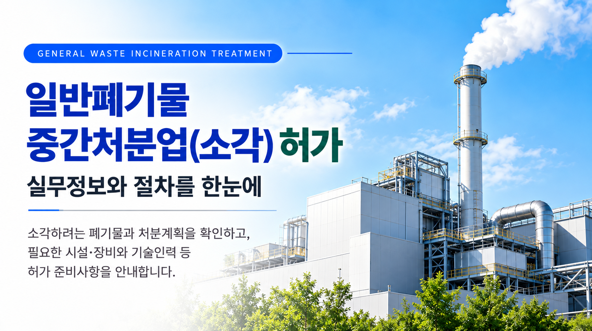
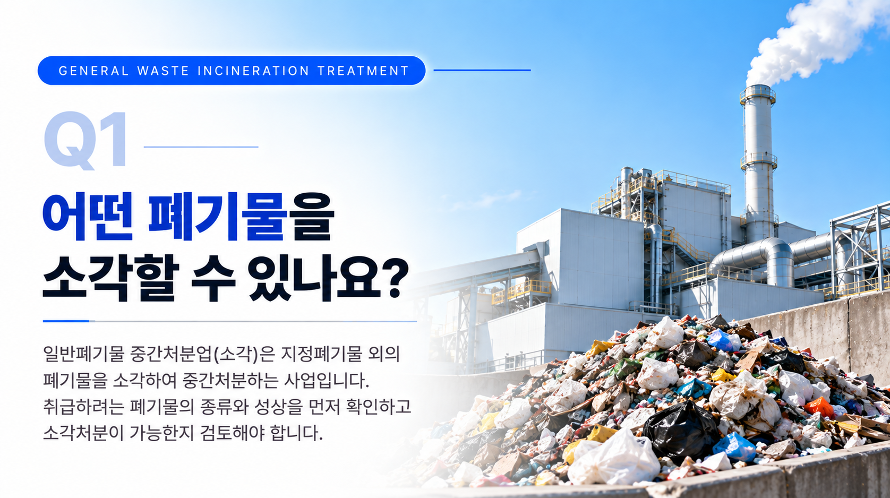
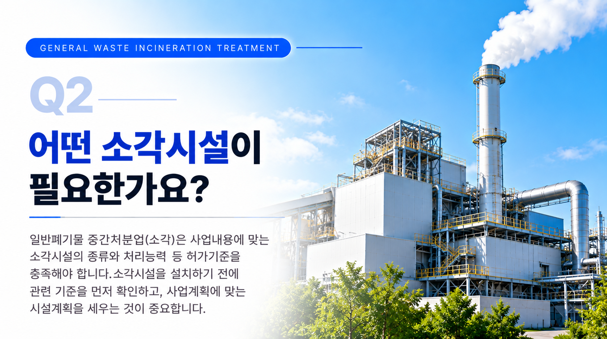
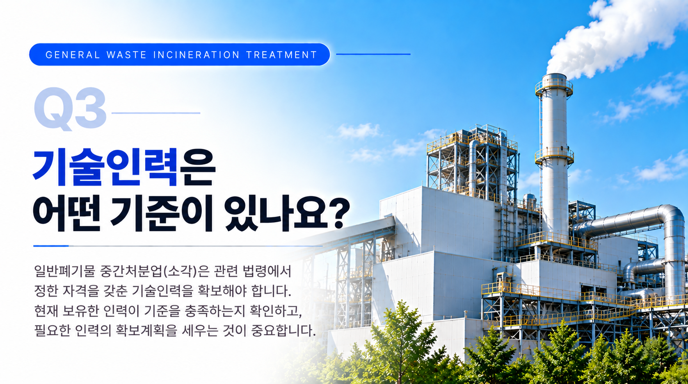

일반폐기물을 소각하는 사업이라고 해서 모두 동일한 기준이 적용되는 것은 아닙니다. 어떤 폐기물을 처리할 것인지, 어떤 방법과 시설로 소각할 것인지, 전체 처리공정을 어떻게 구성할 것인지 등을 먼저 구체화한 뒤 실제 사업내용에 적용되는 허가요건을 확인하는 것이 중요합니다.
01. 일반폐기물 중간처분업(소각)이란?
폐기물을 소각하여 중간처분하는 사업을 하려는 경우에는 처분대상 폐기물과 처리방법 등을 기준으로 해당 폐기물처리업의 허가대상인지 확인해야 합니다.
이 과정에서는 단순히 소각시설만 확인하는 것이 아니라 폐기물의 반입과 보관, 소각처분, 처리 후 반출까지 이어지는 전체 사업계획을 함께 검토하게 됩니다.
따라서 시설을 먼저 설치하기보다는 사업내용과 처리공정을 구체화하고 적용되는 허가기준을 먼저 확인하는 것이 좋습니다.

02. 어떤 폐기물을 처분할 것인지 먼저 확인합니다
중간처분업 허가를 준비할 때 가장 먼저 확인할 사항은 사업장에서 실제로 어떤 폐기물을 처리하려는지입니다.
폐기물의 종류와 성상에 따라 적용되는 처리방법과 허가기준이 달라질 수 있으므로 단순히 ‘일반폐기물’이라고 정하기보다는 실제 취급하려는 폐기물을 구체적으로 확인하는 것이 중요합니다.
- 처분하려는 폐기물의 종류
- 폐기물의 성상과 발생형태
- 해당 폐기물의 소각처분 적정성
- 다른 폐기물 유형에 해당하는지 여부
03. 소각방법과 전체 처리공정을 정리합니다
처분대상 폐기물이 정해지면 해당 폐기물을 어떤 방법으로 소각할 것인지와 전체 처리공정을 구체적으로 정리해야 합니다.
폐기물이 사업장에 들어온 후 계량과 보관을 거쳐 소각처분되고, 처리 후 발생하는 물질이 어떻게 반출되는지까지 전체 흐름을 살펴보는 것이 중요합니다.
이러한 처리공정은 필요한 시설과 장비를 판단하고 사업계획을 작성하는 기초가 됩니다.

04. 사업계획에 맞는 소각시설을 검토합니다
소각전문 중간처분업을 준비할 때에는 처분대상 폐기물과 사업규모에 맞는 소각시설을 검토해야 합니다.
시설의 종류와 처리능력 등은 실제 사업내용에 적용되는 기준을 확인한 뒤 계획하는 것이 중요합니다.
따라서 시설을 먼저 구입하거나 설치하기보다는 처리하려는 폐기물과 예상 처리량, 전체 처리공정을 기준으로 적정한 시설계획인지 먼저 검토하는 것이 좋습니다.
05. 소각시설 외의 시설·장비도 함께 확인합니다
소각전문 중간처분업은 소각시설만 갖춘다고 준비가 끝나는 것은 아닙니다.
폐기물을 안전하게 반입하고 보관하며 처리상황을 확인하기 위해 사업내용에 따라 필요한 시설과 장비를 함께 검토해야 합니다.
| 확인사항 | 검토내용 |
|---|---|
| 보관시설 | 처분대상 폐기물을 적정하게 보관할 수 있는 시설계획 확인 |
| 계량시설 | 폐기물의 반입·처리량 등을 확인하기 위한 시설 검토 |
| 측정·분석 관련 사항 | 소각처리 과정에 적용되는 측정·분석 관련 시설·장비 검토 |
| 기타 시설·장비 | 실제 처리공정과 사업내용에 따라 필요한 시설·장비 확인 |

06. 필요한 기술인력을 확인합니다
일반폐기물 중간처분업(소각)을 준비할 때에는 시설뿐 아니라 관련 기준에 맞는 기술인력도 함께 확인해야 합니다.
단순히 직원을 확보하는 것만으로 판단하기보다는 현재 보유한 인력이 적용되는 자격요건을 충족하는지, 추가로 필요한 인력이 있는지를 검토해야 합니다.
따라서 사업계획을 세우는 단계에서 시설계획과 기술인력 확보계획을 함께 검토하는 것이 좋습니다.
07. 허가 신청 전 사업계획을 구체화합니다
처분대상 폐기물과 소각방법, 시설·장비 및 기술인력 등이 어느 정도 정리되면 이를 바탕으로 폐기물 처리 사업계획을 구체화하게 됩니다.
이때 각각의 사항을 따로 준비하기보다는 폐기물의 반입부터 보관, 소각처분, 처리 후 반출까지 서로 연결되는지를 함께 확인하는 것이 중요합니다.
- 처분대상 폐기물 및 처리계획
- 소각방법 및 전체 처리공정
- 소각시설과 필요한 시설·장비
- 폐기물의 보관 및 반출계획
- 기술인력 확보계획
08. 일반폐기물 중간처분업(소각)은 이런 흐름으로 준비합니다
폐기물처리업은 시설을 먼저 확보한 뒤 허가요건을 확인하기보다는 처분대상 폐기물과 사업내용을 먼저 구체화하고, 이에 적용되는 기준을 확인하면서 시설·인력계획을 세우는 것이 중요합니다.
일반폐기물 중간처분업(소각)을 준비하고 계신가요?
간단한 자가진단을 이용하거나 처분하려는 폐기물과 소각계획, 현재 준비하고 있는 시설·인력 현황을 기준으로 상담을 신청해 보세요.
※ 폐기물처리업의 허가대상과 시설·장비·기술인력 등 적용기준은 처분하려는 폐기물의 종류와 성상, 처리방법 및 실제 사업내용 등에 따라 달라질 수 있으므로 구체적인 사업계획을 기준으로 확인하시기 바랍니다.